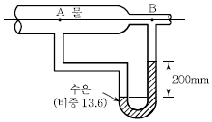
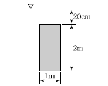
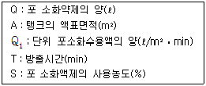

소방설비산업기사(기계) (2009-05-10 기출문제)
1과목: 소방원론
1. 다음 중 발화의 위험이 가장 낮은 것은?
- 트리에틸알루미늄
- 팽창질석
- 수소화리튬
- 황린
(정답률: 70%)

2. 건축물의 내부에 설치하는 피난계단의 구조에서 계단은 내화구조로 하고, 어디까지 직접 연결되도록 하여야 하는가?
- 피난층 또는 옥상
- 피난층 또는 지상
- 개구부 또는 옥상
- 개구부 또는 지하
(정답률: 80%)
3. 액체 물 1g이 100℃, 1기압에서 수증기로 변할 때 열의 흡수량은 몇 cal인가?
- 439
- 539
- 649
- 739
(정답률: 66%)
4. 질소를 불연성 가스로 취급하는 주된 이유는?
- 어떤한 물질과도 화합하지 아니하므로
- 산소와 화합하나 흡열반응을 하기 때문에
- 산소와 산화반응을 하므로
- 산소와 같이 공기 성분으로 산소와 화합할 수 없기 때문에
(정답률: 69%)
5. 프로판 가스의 공기 중 폭발범위는 약 몇 vol%인가?
- 2.1~9.5
- 15~25.5
- 20.5~32.1
- 33.1~63.5
(정답률: 64%)
6. 화학적 점화원이 아닌 것은?
- 연소열
- 용해열
- 분해열
- 아크열
(정답률: 72%)
7. 표준상태에서 탄산가스의 증기비중은 약 얼마인가? (단, 탄산가스의 분자량은 44이다.)
- 1.52
- 2.60
- 3.14
- 4.20
(정답률: 41%)
8. Halon 104가 수증기와 작용해서 생기는 유독가스에 해당하는 것은?
- 포스겐
- 황화수소
- 이산화질소
- 포스핀
(정답률: 70%)
9. 자연발화를 일으키는 원인이 아닌 것은?
- 산화열
- 분해열
- 흡착열
- 기화열
(정답률: 67%)
10. 목탄의 주된 연소형태에 해당하는 것은?
- 자기연소
- 표면연소
- 증발연소
- 확산연소
(정답률: 75%)
11. 다음 중 제4류 위험물이 아닌 것은?
- 가솔린
- 메틸알콜
- 아닐린
- 탄화칼슘
(정답률: 52%)
12. 제1석유류는 어떤 위험물에 속하는가?
- 산화성 액체
- 인화성 액체
- 자기반응성 물질
- 금수성 물질
(정답률: 57%)
13. 물과 접촉하면 발열하면서 수소기체를 발생하는 것은?
- 과산화수소
- 나트륨
- 황린
- 아세톤
(정답률: 50%)
14. 열전달의 스테판－볼츠만의 법칙은 복사체에서 발산되는 복사열은 복사체의 절대온도의 몇 승에 비례한다는 것인가?
- 1/2
- 2
- 3
- 4
(정답률: 74%)
15. 공기 중의 산소는 용적으로 약 몇 % 정도인가?
- 15
- 21
- 25
- 30
(정답률: 72%)
16. 다음 중 연소시 발생하는 가스로 독성이 가장 강한 것은?
- 수소
- 질소
- 이산화탄소
- 일산화탄소
(정답률: 77%)
17. 다음 중 화재하중에 주된 영향을 주는 것은?
- 가연물의 온도
- 가연물의 색상
- 가연물의 양
- 가연물의 융점
(정답률: 80%)
18. 관람석 또는 집회실의 바닥면적 합계가 200m2인 다음 건축물의 주요구조부를 내화구조로 하지 않아도 되는 것은?
- 종교시설
- 주점영업소
- 동ㆍ식물원
- 장례식장
(정답률: 65%)
19. 화재종류 중 A급 화재에 속하지 않는 것은?
- 목재 화재
- 섬유 화재
- 종이 화재
- 금속 화재
(정답률: 80%)
20. 건축물의 주요구조부가 아닌 것은?
- 기둥
- 바닥
- 보
- 옥외계단
(정답률: 70%)
2과목: 소방유체역학
21. 피토관을 이용하여 흐르는 물의 압력을 측정하였더니 전압력이 294kPa, 정압이 98kPa이었다. 이 위치에서 유속은 약 몇 m/s인가?
- 6.2
- 8.2
- 15.7
- 19.8
(정답률: 33%)
22. A, B, C급 화재에 모두 적응성이 있어 가장 널리 쓰이는 분말 소화약제의 주성분은?
- NH4H2PO4
- NaHCO3
- KHCO3
- KHCO3＋(NH2)2CO
(정답률: 74%)
23. 회전속도 1,000rpm일 때 송출량 Qm3/min, 전양정 Hm인 원심폄프가 상사한 조건에서 회전속도가 1,200rpm으로 작동할 때 유량 및 전양정은?
- 1.2Q, 1.44H
- 1.2Q,

- 1.44Q,

- 1.44Q, 1.2H
(정답률: 58%)
24. 체적이 200L인 용기에 압력이 800kPa이고 온도가 200℃의 공기가 들어 있다. 공기를 냉각하여 압력을 500kPa로 낮추려면 약 몇 kJ의 열을 제거하여야 하는가? (단, 공기의 정적비열은 0.718kJ/kgㆍK이고, 기체상수는 0.287kJ/kgㆍK이다.)
- 150
- 570
- 990
- 1,400
(정답률: 22%)
25. 길이 300m, 지름이 10cm인 관에 1.2m/s의 평균속도로 물이 흐르고 있다면 손실 수두는 약 몇 m인가? (단, 관의 마찰계수는 0.02이다.)
- 2.1
- 4.4
- 6.7
- 8.3
(정답률: 63%)
26. 관 지름이 400mm인 수평 원관 내에 어떤 액체가 층류로 흐르고 있을 때, 관 벽에서의 전단 응력은 200N/m2이다. 이때 관 길이 30m에 대한 압력강하는 몇 kPa인가?
- 15
- 30
- 60
- 120
(정답률: 29%)
27. 유체에 대한 설명으로 가장 적합한 것은?
- 유체는 전단응력에 견디지 못하고 연속적으로 변형한다.
- 유체에 있어서 분자운동의 범위는 고체의 것과 거의 같다.
- 어떠한 용기를 채울 때에는 항상 팽창한다.
- 유체는 아무리 작은 접선력에도 계속적으로 저항 할 수 있는 것이다.
(정답률: 56%)
28. 수평면과 45° 경사를 갖는 지름 250mm인 원관의 위쪽 출구 방향으로 유출하는 물 제트의 유출속도가 9.8m/s라고 한다면 출구로부터의 물 제트의 최고 수직상승 높이는 약 몇 m인가? (단, 공기의 저항은 무시함)
- 2.45
- 3
- 3.45
- 4.45
(정답률: 32%)
29. 어떤 오일의 동점성계수가 2×10－4m2/s이고 비중이 0.9라면 점성계수는 몇 kg/mㆍsec인가? (단, 물의 밀도는 1,000kg/m3이다.)
- 1.2
- 2.0
- 0.18
- 1.8
(정답률: 49%)
30. 국소 대기압이 94.66kPa인 곳에서 개방탱크 속에 높이 2m의 물과 그 위에 비중 0.83인 기름이 2m 높이로 들어있다. 탱크 밑면의 절대압력은 약 몇 kPa인가?
- 130.5
- 133.8
- 136.5
- 146.5
(정답률: 39%)
31. 펌프 입구에서의 압력 80kPa, 출구에서의 압력 160kPa이고, 이 두 곳의 높이 차이(출구가높음)는 1m이다. 입구 및 출구 관의 직경은 같으며 송출유량이 0.02m3/s일때, 효율 90%인 펌프에 필요한 동력은 약 몇 kW인가?
- 1.4
- 1.6
- 1.8
- 2.0
(정답률: 32%)
32. 직경 10cm의 원형 노즐에서 물이 50m/s의 속도로 분출되어 평판에 수직으로 충돌할 때 벽이 받는 힘의 크기는 약 몇 kN인가?
- 19.6
- 33.9
- 57.1
- 79.3
(정답률: 39%)
33. 물이 흐르고 있는 관에 설치된 시차 액주계를 보고 A, B 두점의 압력차는 약 몇 kPa인가?

- 2.72
- 26.7
- 24.7
- 2.52
(정답률: 32%)
34. 청정 소화약제인 HCFC－124의 화학식은?
- CHF3
- CF3CHFCF3
- CHClFCF3
- C4H10
(정답률: 60%)
35. 일명 AFFF라고도 하며 유류화재에 우수한 소화 효과가 있는 포 소화약제는?
- 단백포
- 내알콜포
- 불화단백포
- 수성막포
(정답률: 58%)
36. 그림과 같이 폭 1m, 길이 2m인 평판이 수면과 수직을 이루고 있다. 평판 윗면의 수심이 20cm일 때 평판에 작용하는 물에 의한 힘의 크기는 약 몇 kN인가?

- 20.5
- 21.2
- 22.1
- 23.5
(정답률: 21%)
37. 할로겐 화합물 소화약제 중 가장 독성이 약한 것은?
- 하론 1211
- 하론 1011
- 하론 1301
- 하론 2402
(정답률: 66%)
38. 압력 2MPa, 온도 250℃의 공기가 이상적인 가역단열팽창을 하여 압력이 0.2MPa로 변화할 때 변화 후 온도는 약 몇 K인가? (단, 공기의 비열비는 1.4이다.)
- 265K
- 271K
- 278K
- 283K
(정답률: 57%)
39. 4MPa, 27℃에서 질소의 비체적은 몇 m3/kg인가? (단, 질소의 기체상수는 296.8J/kgㆍK이다.)
- 0.01956
- 0.02012
- 0.02135
- 0.02226
(정답률: 36%)
40. 배관 내에서 물의 수격작용(Water Hammer)을 방지하는 대책으로 잘못된 것은?
- 조압 수조(Surge Tank)를 관선에 설치한다.
- 밸브를 펌프 송출구에서 멀게 설치한다.
- 밸브를 서서히 조작한다.
- 관경을 크게 하고 유속을 작게 한다.
(정답률: 60%)
3과목: 소방관계법규
41. 특정소방대상물로 위락시설에 해당 되지 않는 것은?
- 투전기업소
- 카지노업소
- 무도장
- 공연장
(정답률: 41%)
42. 다음 중 화재원인조사의 종류에 속하지 않는 것은?
- 연소상황 조사
- 인명피해 조사
- 피난상황 조사
- 소방시설 등 조사
(정답률: 44%)
43. 방화관리대상물의 관계인이 방화관리자를 선임한 경우에는 행정안전부령이 정하는 바에 따라 선임한 날부터 며칠 이내에 소방본부장 또는 소방서장에게 신고하여야 하는가?
- 7일
- 14일
- 21일
- 30일
(정답률: 61%)
44. 다량의 위험물을 저장ㆍ취급하는 제조소 등으로서 대통령령이 정하는 제조소등이 있는 동일한 사업소에서 대통령령이 정하는 수량 이상의 위험물을 저장 또는 취급하는 경우 당해 사업소의 관계인은 대통령령이 정하는 바에 따라 당해 사업소에 자체소방대를 설치하여야 한다. 여기서 “대통령령이 정하는 수량”이라 함은 지정수량의 몇 배를 말하는가?
- 2천배
- 3천배
- 4천배
- 5천배
(정답률: 66%)
45. 소방시설관리업자의 지위를 승계한 자는 승계한 날로부터 며칠 이내에 시ㆍ도지사에게 신고하여야 하는가?
- 14일 이내
- 20일 이내
- 28일 이내
- 30일 이내
(정답률: 42%)
46. 의용소방대의 설치 등에 대한 사항으로 옳지 않는 것은?
- 의용소방대원은 비상근으로 한다.
- 소방업무를 보조하기 위하여 특별시ㆍ광역시ㆍ시ㆍ읍ㆍ면에 의용소방대를 둔다.
- 의용소방대의 운영과 처우 등에 대한 경비는 그 대원의 임면권자가 부담한다.
- 의용소방대의 설치ㆍ명칭ㆍ구역ㆍ조직 훈련 등 운영 등에 관하여 필요한 사항은 소방방재청장이 정한다.
(정답률: 36%)
47. 다음 중 2급 방화관리대상물의 방화관리자의 선임대상으로 부적합한 것은?
- 소방본부 또는 소방서에서 1년 이상 화재진압 또는 보조업무에 종사한 경력이 있는 자
- 경찰공무원으로 3년 이상 근무한 경력이 있는 자
- 방화관리에 관한 강습교육을 수료한 자
- 의무소방대의 소방대원으로 1년 이상 근무한 경력이 있는 자
(정답률: 38%)
48. 다음 중 소방용수시설의 저수조 설치기준으로 옳지 않은 것은?
- 지면으로부터의 낙차가 4.5m 이하일 것
- 흡수부분의 수심이 0.5m 이상일 것
- 흡수관의 투입구가 사각형의 경우에는 한 변의 길이가 60cm 이상일 것
- 저수조에 물을 공급하는 방법은 상수도에 연결하여 수동으로 급수되는 구조일 것
(정답률: 65%)
49. 소방시설업의 등록을 하지 아니하고 영업한 자의 벌칙은?(관련 규정 개정전 문제로 여기서는 기존 정답인 2번을 누르면 정답 처리됩니다. 자세한 내용은 해설을 참고하세요.)
- 1년 이하의 징역 또는 1,000만원 이하의 벌금
- 3년 이하의 징역 또는 1,500만원 이하의 벌금
- 3년 이하의 징역 또는 3,000만원 이하의 벌금
- 5년 이하의 징역 또는 3,000만원 이하의 벌금
(정답률: 45%)
50. 건축허가 등의 동의대상물과 관련하여 항공기격납고의 경우 건축허가 등의 동의를 받아야 하는 조건으로 알맞은 것은?
- 바닥면적 1,000m2 이상인 것
- 바닥면적 3,000m2 이상인 것
- 바닥면적 5,000m2 이상인 것
- 바닥면적에 관계없이 건축허가 동의 대상이다.
(정답률: 62%)
51. 제4류 위험물 제조소의 경우 사용전압이 22kV인 특고압가공전성이 지나갈 때 제조소의 외벽과 가공전선 사이의 수평거리(안전거리)는 몇 [m] 이상 이어야 하는가?
- 3m
- 5m
- 10m
- 20m
(정답률: 19%)
52. 하자보수대상 소방시설 중 하자보수보증기간이 3년인 것은?
- 유도등
- 비상방송설비
- 간이스프링클러설비
- 무선통신보조설비
(정답률: 59%)
53. 다음 중 소방용 기계ㆍ기구에 해당하지 않는 것은?
- 방염제
- 구조대
- 화학반응식거품소화기
- 공기호흡기
(정답률: 48%)
54. 제1종 판매취급소는 저장 또는 취급하는 위험물의 수량이 지정수량의 얼마인 판매취급소를 말하는가?
- 20배 이하
- 20배 이상
- 40배 이하
- 40배 이상
(정답률: 24%)
55. 저장소 또는 제조소 등이 아닌 장소에서 지정수량 이상의 위험물을 저장 또는 취급한 자에 대한 벌칙은?
- 1년 이하 징역 또는 1천만원 이하의 벌금
- 2년 이하 징역 또는 1천만원 이하의 벌금
- 1년 이하 징역 또는 2천만원 이하의 벌금
- 2년 이하 징역 또는 2천만원 이하의 벌금
(정답률: 59%)
56. 소방기본법령상 구급대의 편성과 운영을 할 수 있는 자와 거리가 먼 것은?
- 소방방재청장
- 소방본부장
- 소방서장
- 시장ㆍ군수
(정답률: 62%)
57. 소방용수시설 중 저수조 설치시 지면으로부터 낙차의 범위로 알맞은 것은?
- 2.5m 이항
- 3.5m 이하
- 4.5m 이항
- 5.5m 이하
(정답률: 70%)
58. 방염대상물품 중 제조 또는 가공공정에서 방염처리를 하여야 하는 물품이 아닌 것은?
- 암막
- 두께가 2mm 미만인 종이벽지
- 바닥에 설치하는 카페트
- 창문에 설치하는 브라인드
(정답률: 58%)
59. 소방본부장 또는 소방서장은 건축허가 등의 동의요구서류를 접수한 날부터 며칠 이내에 건축허가 등의 동의여부를 회신하여야 하는가? (단, 허가 신청한 건축물 등의 연면적은 30,000m2 이상 인 경우이다.)
- 7일
- 10일
- 14일
- 30일
(정답률: 50%)
60. 방염업자의 지위승계에 관한 사항으로 옳지 않은 것은?
- 합병 후 존속하는 법인이나 합병에 의하여 설립되는 법인은 그 방염업자의 지위를 승계한다.
- 방염업자의 지위를 승계한 자는 행정안전부령이 정하는 바에 따라 시ㆍ도지사에게 신고하여야 한다.
- 지방세법에 따른 압류재산의 매각과 그 밖에 이에 준하는 절차에 따라 시설의 전부를 인수한 자는 그 방염업자의 지위를 승계한다.
- 시ㆍ도지사는 지위승계 신고를 받은 때에는 30일 이내에 방염처리업등록증 및 등록수첩을 새로 교부하고, 제출된 기술인력의 기술자격증에 그 변경사항을 기재하여 교부한다.
(정답률: 40%)
4과목: 소방기계시설의 구조 및 원리
61. 가연성가스의 저장ㆍ취급시설에 설치하는 연결살수설비헤드의 상호간 거리는 얼마인가?
- 2.1m 이하
- 2.3m 이하
- 3.0m 이하
- 3.7m 이하
(정답률: 52%)
62. 고정포방출구 방식에 있어서 고정포방출구에서 방출하기 위하여 필요한 포 소화약제의 양을 산출하는 공식으로 적합한 것은?

- Q = A×Q1
- Q = A×Q1×T
- Q = A×Q1×T×S
- Q = 1.2×( A ×Q1×T×S)
(정답률: 63%)
63. 분말 소화설비에 사용되는 밸브 중 정압작동장치에 의해 개방되는 밸브는?
- 클리닝 밸브
- 니들 밸브
- 주 밸브
- 기동 용기 밸브
(정답률: 50%)
64. 소화펌프의 성능시험 방법 및 배관에 대한 설명으로 맞는 것은?
- 펌프의 성능은 체절운전시 정격 토출압력의 150%를 초과하지 아니하여야 할 것
- 정격 토출량의 150%로 운전시 정격 토출압력의 65% 이상이어야 할 것
- 성능 시험배관은 펌프의 토출측에 설치된 개폐밸브 이후에서 분기할 것
- 유량 츨정장치는 펌프의 정격 토출량의 165%까지 츨정할 수 있는 성능이 있을 것
(정답률: 48%)
65. 자동소화설비가 설치되지 아니한 음식점의 바닥면적이 170m2인 주방에 수동식 소화기를 설치하고, 그 외 추가하여야 할 소화기구인 자동확산소화용구는 몇 개인가?
- 1개
- 2개
- 3개
- 4개
(정답률: 36%)
66. 옥내소화전방수구와 연결되는 가지배관의 구경은 얼마인가?
- 40mm 이상
- 50mm 이상
- 65mm 이상
- 100mm 이상
(정답률: 47%)
67. 연소할 우려가 있는 개구부의 스프링클러헤드 설명으로 맞는 것은?
- 개구부 상하좌우에 3.2m 간격으로 헤드를 설치한다.
- 스프링클러헤드와 개구부의 내측면으로부터 직선거리는 15cm 이하이다.
- 개구부 폭이 3.2m 이하인 경우 그 중앙에 1개의 헤드를 설치한다.
- 사람이 상시 출입하는 개구부로서 통행에 지장이 있는 때에는 설치하지 않아도 된다.
(정답률: 57%)
68. 스프링클러설비의 종류 중 개방형 헤드를 사용하는 설비는?
- 습식
- 건식
- 일제 살수식
- 준비 작동식
(정답률: 60%)
69. 분무상태를 만드는 방법에 따라 물분무 헤드를 구분할 때 적당하지 않은 것은?
- 분사형
- 충돌형
- 슬리트형
- 리프트형
(정답률: 56%)
70. 이산화탄소 소화약제의 저장용기의 설치 기준 중 고압식 저장용기의 충전비는?
- 1.34 이상 1.5 이하
- 1.5이상 1.9 이하
- 1.1 이상 1.9 이하
- 1.8 이상
(정답률: 75%)
71. 연결살수설비의 송수구 설치에서 하나의 송수구역에 부착하는 살수헤드가 몇 개 이하인 것에 있어서는 단구형으로 설치를 할 수 있는가?
- 10개
- 15개
- 20개
- 30개
(정답률: 56%)
72. 옥외 소화전이 하나의 소방대상물을 포용하기 위하여 4개소에 설치되어 있다. 규정에 적합한 수원의 유효수량은 몇 m3 이상이어야 하는가?
- 5.2
- 7
- 10.4
- 14
(정답률: 49%)
73. 이산화탄소 약제에 의한 소화가 부적합한 장소는 어느 것인가?
- 컴퓨터실
- 경유 저장실
- 도서실
- 니트로셀룰로스 저장실
(정답률: 38%)
74. 연결살수설비의 배관에 관한 설치기준에서 맞는 것은?
- 연결살수설비 전용헤드를 사용하는 경우, 배관의 구경이 50mm일 때 하나의 배관에 부착하는 헤드의 개수는 4개이다.
- 폐쇄형 헤드를 사용하는 경우, 시험배관은 송수구의 가장 먼 가지배관의 끝으로부터 연결 설치한다.
- 개방형 헤드를 사용하는 수평주행배관은 헤드를 향하여 상향으로 1/50 이상의 기울기로 설치한다.
- 가지배관의 배열은 토너멘트방식으로 한다.
(정답률: 50%)
75. 특수가연물을 저장하는 랙크식 창고에 스프링클러 설비를 설치하려고 할 때 높이 몇 m 이하마다 스프링클러 헤드를 설치하여야 하는가?
- 3
- 4
- 5
- 6
(정답률: 44%)
76. 할로겐화합물 소화설비의 특징으로 적당하지 않은 것은?
- 오존층을 보호하여 준다.
- 연소억제 작용이 크며, 소화능력이 크다.
- 금속에 대한 부식성이 적다.
- 변질, 분해 등이 적다.
(정답률: 67%)
77. 특별피난계단의 부속실에 제연설비를 하려고 한다. 자연배출식 수직풍도의 내부단면적이 5m2일 경우 송풍기를 이용한 기계배출식 수직풍도의 최소 내부단면적은 몇 m2 이상이어야 하는가?
- 1m2
- 1.25m2
- 1.5m2
- 2m2
(정답률: 30%)
78. 전역방출방식의 고발포용 고정포방출구는 바닥면적 얼마마다 1개 이상 설치하는가?
- 500m2
- 400m2
- 600m2
- 300m2
(정답률: 55%)
79. 피난기구로 미끄럼대를 설치할 때 사용자의 안전상 보통 지상 몇 층까지 설치토록 하는가?
- 2층
- 3층
- 4층
- 5층
(정답률: 60%)
80. 제연구역으로부터 공기가 누설하는 출입문의 누설 틈새 면적을 식 A = ( L/ℓ) ×Ad로 산출할 때 각 출입문의 ℓ과 Ad의 수치가 잘못된 것은? (단, A : 출입문의 틈새(m2), L ： 출입문 틈새의 길이(m), ℓ ： 표준 출입문의 틈새길이(m), Ad：표준 출입문의 누설면적(m2)이다.)
- 외여닫이문： ℓ＝6.5
- 쌍여닫이 문： ℓ＝9.2
- 승강기 출입문： ℓ＝8.0
- 승강기 출입문：Ad＝0.06
(정답률: 57%)